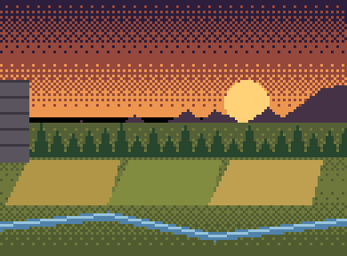
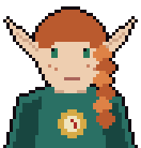

Warden, our scouts have spotted something troubling. The wilderness beyond Draconia grows wilder by the day, and our villagers are stretched thin.
Wayfinders trained there can venture out and rescue lost souls: villagers stranded beyond our borders.